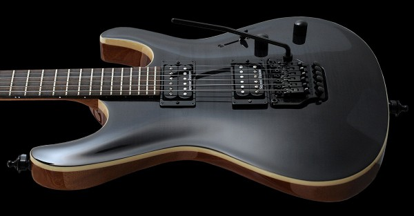
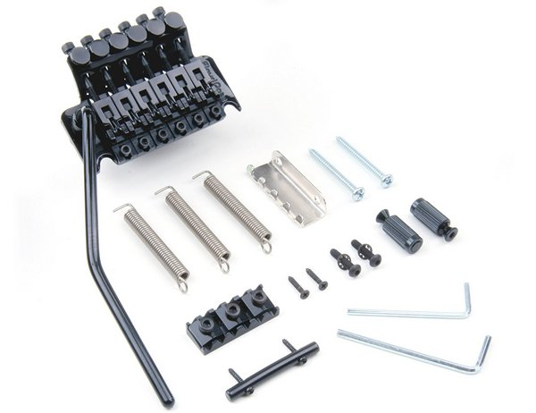
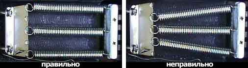
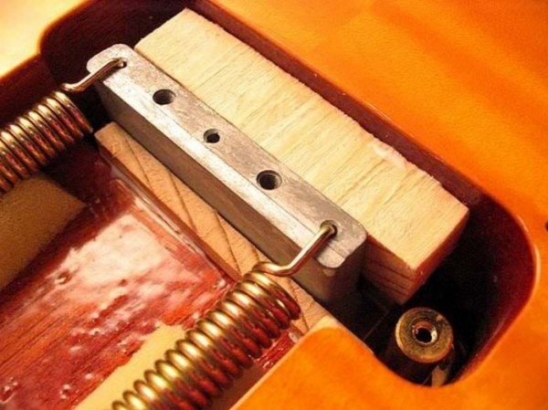

Floyd Rose: особенности и настройка легендарного тремоло
Floyd Rose – популярнейшая тремоло-система, изобретенная и запатентованная талантливым инженером Флойдом Роузом 40 лет назад. Разработка конструкции «плавающего» бриджа изменила мир рок-музыки в целом и ее тяжелых поджанров в частности. Благодаря упорству и таланту Флойда музыканты получили возможность изменять высоту звучащей ноты как в сторону повышения, так и понижения с помощью рычага, добиваться необычных вариаций эффекта вибрато, экспериментировать со звучанием натуральных и искусственных флажолетов. Но обо всем по порядку.
Конструкция тремоло-системы Floyd Rose
Классическая система Флойд Роуз Original включает в себя «плавающий» бридж, который может качаться вверх и вниз, а также топ-лок – верхний порожек с запирающими механизмами, который не даёт струнамдвигаться в пазах. Топ-лок снижает нагрузку на гитарные колки и позволяет удерживать натяжение струн там, где расположен верхний порожек. Таким образом, при качении рычагом зажатые струны всегда будут иметь одинаковое натяжение – так он помогает сохранить строй гитары даже при активной работе тремоло.
Очевидно, что использовать гитарные колки для настройки гитары с зажатым топ-локом бессмысленно: именно по этой причине сначала гитара настраивается с незатянутыми замками на верхнем порожке, а далее для текущей настройки используются специальные винты микроподстройки, расположенные на бридже.
Конструкция плавающего порожка позволяет с помощью рычага ослаблять либо усиливать натяжение струн – таким образом музыкант добивается повышения или понижения звучащих нот. Именно это отличает Floyd Rose от классических предшественников – фиксированных бриджей. Благодаря возможности «качать» рычагом строй гитары музыкант может получить очень необычное звучание: глубокое вибрато, «визжащие» флажолеты, глубокие «нырки» отдельных нот и многое другое.
Однако есть у такого удовольствия и своя цена: во-первых, это денежная стоимость Floyd Rose. Оригинальные тремоло стоят обычно в районе 100$, дополнительный бюджет также придется выделить на установку. Второй недостаток Флойда – высокие требования к точности отстройки и уходу за системой.
Если вы решили купить Floyd Rose, то помните, что замена струн займет у вас намного больше времени, нежели в случае с фиксированным бриджем или более простыми тремоло; разрыв одной струны в 99% случае полностью «убьет» строй гитары»; неаккуратное перемещение гитары в пространстве или сильный нажим ребром правой ладони на бридж могут расстроить инструмент.
Настройка гитары с Floyd Rose
Вкратце расскажем о том, каким непростым является процесс отстройки Floyd Rose Original и других «плавающих» систем на примере гитар от компании Ibanez.
ВНИМАНИЕ! Все указанные действия требуют наличия определенных навыков в области настройки гитарной фурнитуры. При неумелом обращении с тремоло вы можете нанести системе определенный вред – используйте данную схему на свой страх и риск и помните, что точную и качественную настройку Floyd Rose всегда лучше доверить мастеру.
Перечислим основные этапы настроки:
Часть 1: замена струн
Заменить струны на инструменте с «машинкой» в целом не очень сложно, но стоит запастись определенным количеством терпения. Не забывайте о главном принципе тремоло-систем – настраивая одну струну, вы влияете на натяжение других.
Для начала подготовьте тюнер: никаких настроек на слух, по флажолету или унисону на 5/4 ладу. Настройку следует производить начиная с толстых струн, а менять струны – с тонких.
Полезные советы:
- Одновременно можно менять только одну струну, начинать стоит с самой тонкой;
- Вокруг колка стоит делать не более 2-3 аккуратных и плотных витков.
Начинаем замену струн:
- Ослабьте зажимы топлока так, чтобы струны могли свободно двигаться в пазах;
- Снимите старую первую струну и замените ее на новую, натяните до необходимой ноты, после чего сделайте пару бендов, слегка нажмите на неё за верхним порожком и возле бриджа – это поможет ей сразу же растянуться. Еще раз настройте струну до нужной ноты. Повторяйте процедуру, пока не поймете, что струна уже не так сильно растягивается и окончательно настройте ее на необходимую ноту.
- Снимите вторую струну и замените ее на новую. Повторите процедуру настройки, описанную в п. 2. Не приступайте в 3-й струне, пока не убедитесь в точности настройки первых двух.
- Замените третью струну и повторите процедуру из п. 2. Поднастройте все три новых струны – из-за особенностей системы Floyd Rose при замене одной из них расстраиваются все остальные.
- Переставьте 4-6 струны, не забывая каждый раз поднастраивать гитару. Из-за толщины и натяжения сложнее всего это будет сделать после установки шестой струны.
Рекомендации:
- Описанный процесс может показаться утомительным, однако он позволит сэкономить время и силы в дальнейшем – ваша гитара будет медленнее расстраиваться в будущем;
- Не рекомендуется сразу же фиксировать струны в топлоке – новый комплект струн должен «привыкнуть» к натяжению. Опытные музыканты советуют как минимум пару дней подержать струны отпущенными, после чего провести финальную настройку и зафиксировать зажимы в верхнем порожке. При этом пару дней, пока струны привыкают к натяжению и проходят через естественное растяжение, рекомендуется играть на инструменте почаще.
Наконец, немного о том, как подстраивать гитару с Floyd Rose, на которой установлены новые, уже растянувшиеся струны. В данном случае идем от толстых струн к тонким: сначала ослабляем зажимы в топлоке, после чего настраиваем шестую струну. Беремся за пятую, после чего проверяем шестую. Переходим к четвертой, настраиваем ее, потом проверяем пятую и шестую струны – и так далее, то есть настраиваем каждую струну, проверяя уже настроенные.
В самом конце процедуры зажимаем топлоки и наслаждаемся игрой на настроенном комплекте струн!
Часть 2: основная настройка гитары
Часть 3: дополнительные настройки
Натяжение пружин тремоло
Согласитесь, что с гитарами, оборудованными тремоло типа Floyd Rose и аналогичными системами, часто бывают следующие ситуации: вы берете в руки гитару своего друга или магазинный инструмент и сразу же чувствуете, как прекрасно он «лежит» в руке, как удобно на нем играть и, в частности, пользовать рычагом тремоло.
Во многом эти ощущения, конечно же, зависят от качества настройки основных параметров гитары – о них мы говорили выше. Однако один из важных аспектов – регулировка натяжения пружин вашей тремоло-машины.
Сразу же отметим, что убрав одну из пружин тремоло вы не сможете добиться более слабого натяжения струн и сделать их мягче. Однако вы вполне можете регулировать жесткость хода пружин и сейчас мы расскажем вам, как это сделать:
- Если пружины новые, то их стоит растянуть – проще всего это сделать, подложив между корпусом и задней частью тремоло какой-нибудь небольшой предмет. Вполне подойдет кусочек пластмассы, металла или деревянные брусок – единственное, что следует учитывать, что не нужно сильно прогибать тремоло. Хватит высоты примерно в 0.3 – 0.5 см, не забудьте обернуть подкладываемый предмет тряпочкой или изолентой для того, чтобы защитить корпус от трещин и царапин. Обычно для растяжения пружин хватает 2-3 дня – после удаления предмета отрегулируйте натяжение пружин и настройте свой инструмент.
- Похожего результата можно добиться, увеличивая нагрузку на каждую из пружин – просто удалите на ночь одну из них. Спустя сутки поставьте пружину обратно (кстати, этот вариант проще, так как нет необходимости в настройке гитары после процедуры) и удалите уже другую пружину. Таким образом, за неделю каждую из них вы сможете снять по пару раз – это легче и безопаснее, чем растягивание пружин первым способом.
Как ослабить натяжение струн?
Этот очень популярный вопрос задают многие новички, впервые столкнувшиеся с системами Флойд Роуз.
Для начала вам стоит понять, что данные тремоло разрабатывались под определенные комплекты струн, в большинстве случаев это комплекты .009 - .042 в стандартном строе. Именно такое сочетание гарантирует оптимальное натяжение струн и адекватную нагрузку на тремоло.
Хотите сделать натяжение слабее? Используйте более тонкий комплект в том же строе, либо используйте свой любимый калибр струн, но в более низком строе (попробуйте перестроить инструмент на полтона-тон ниже). Не забывайте, однако, что калибр под каждый строй высчитывается неспроста: эксперименты с использованием комплектов струн не под «свой» строй могут повлиять на частотные характеристики звучания, уменьшить сустейн и т.д.
Статьи о выборе калибра струн и натяжении струн:
Какие струны луче подойдут под определенный строй? >>>Натяжение струн: все, что необходимо знать >>>
Правильное крепление пружин тремоло
Многие гитаристы для экспериментов с жесткостью тремоло Floyd Rose и ему подобных меняют положение пружин с параллельного на «стрелу», то есть сдвигая место крепления крайних пружин к центральной со стороны регулировочных винтов. Уверяем вас, что в этом абсолютно нет смысла кроме ситуации, когда пружины уже сильно растянуты и у вас нет возможности приобрести новые.
Как изменить сопротивления при вращении рычага
Каждый музыкант сам выбирает комфортное для него положение рычага – одним гитаристам нравится, когда он жестко расположен параллельно струнам, другие же, как например Steve Vai, делают выбор в пользу свободного расположения, то есть когда рычаг болтается.
Инструменты, которые вам понадобятся: изолента или скотч, небольшие плоскогубцы или пинцет, небольшая плоская отвертка.
Этапы настройки сопротивления рычага при вращении:
- Вытаскиваем рычаг;
- Удаляем 2 прокладки из нейлона;
- В каждый из пазов подкладываем немного изоленты (скотча)
- Возвращаем обратно прокладки
- Снова закручиваем рычаг
Если сопротивление все еще достаточно слабое, значит нужно добавить еще изоленты (скотча), соответственно если рычаг крутится слишком туго – удалите лишнюю изоленту (скотч).
Блокируем тремоло-систему для быстрого изменения строя гитары
Одна из проблем плавающих систем типа Флойд Роуз – невозможность быстро изменить строй гитары, допустим, на полтона или понизить шестую струну на тон для получения дроп-строя.
Однако существует способ полной блокировки системы, который позволит и относительно быстро перестроить инструмент, и использовать микроподстройку – правда при этом тремоло превращается в обычный фиксированный бридж.
Для полной блокировки вы можете поместить небольшой кусочек дерева между декой и пружинной системой, после чего снимается центральная пружина: таким образом удается сделать тремоло неподвижным и перестраивать гитару в любой момент не опасаясь, что угол машинки поменяется.
Инструменты, которые вам понадобятся: шестигранный ключ на 3 мм и крестовая отвертка среднего размера.
Этапы блокировки Floyd Rose:
- Отпускаем зажимы топлока.
- Снимаем заднюю крышку тремоло – там, где расположены пружины.
- Вставляем между пружинным блоком и тремоло брусок: его размеры узнайте заранее, измерив свободное пространство в своей гитаре (см. фото). Обязательно убедитесь в том, что угол расположения тремоло-системы не меняется после помещения бруска. Для точной корректировки размеров бруска и защиты корпуса от повреждения можно использовать изоленту.
- Удалите центральную пружину – таким образом механизм упрется в брусок. Добиться этого можно также просто ослабив натяжение с помощью регулировочных винтов.